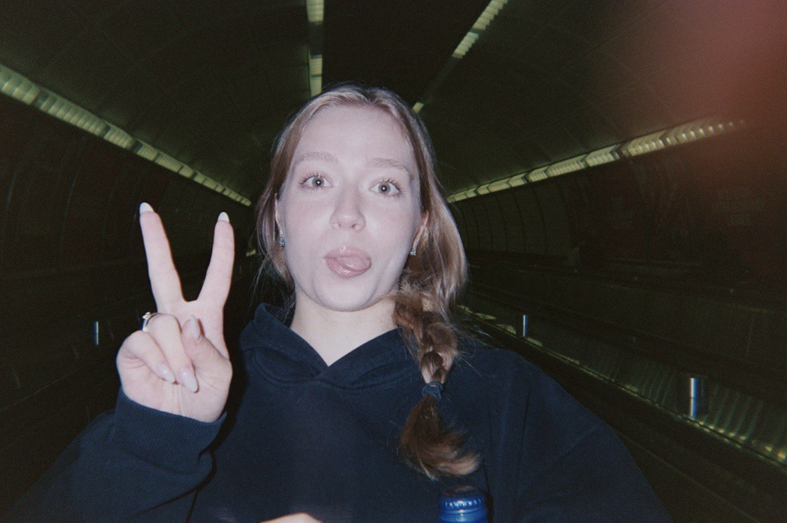

I am astudent designer at Parsons School of Design 27', originally from Moscow and
currently based in New York City. With her multidisciplinary background in Psychology, Creative
Entrepreneurship and Graphic Design, she blends human insight with visual strategy to craft emotionally
resonant Branding & Advertising Projects.
Previously @ BBDO Contrapunto Russia strengthened
her
ability to deliver high-quality works and design meaningful experiences under tight deadlines.
Veronica is deeply dedicated to exploring how emotion and strategy intersect to unlock the full
potential of
any given brand or project in digital and analog spaces. Currently, as a Creative Social Media Intern at
Dsquared2, she develops AI-driven photoshoots and digital campaigns that strengthen brand profile
cohesion
across social channels. Additionally, she works with select clients on Freelance Branding projects and
Book
Publishing.
She welcomes new collaborations and freelance opportunities;)
